calamares-install fail
exit 5
check 8 (systemcheck) FAILED:
command: systemcheck --cli --ci
exit: 1
output:
systemcheck unknown option: --ci
fail content: UNVALIDATED (no golden) vm-defined
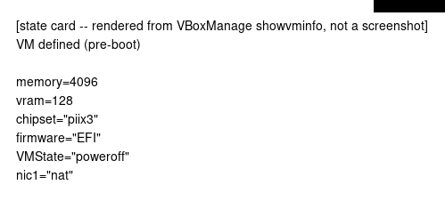
fail content: UNVALIDATED (no golden) firmware-state (live / pre-install)
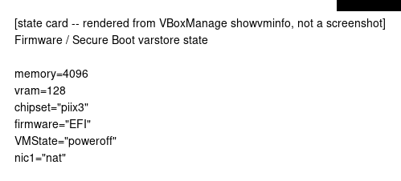
fail content: UNVALIDATED (no golden) live-grub-menu (live / pre-install)
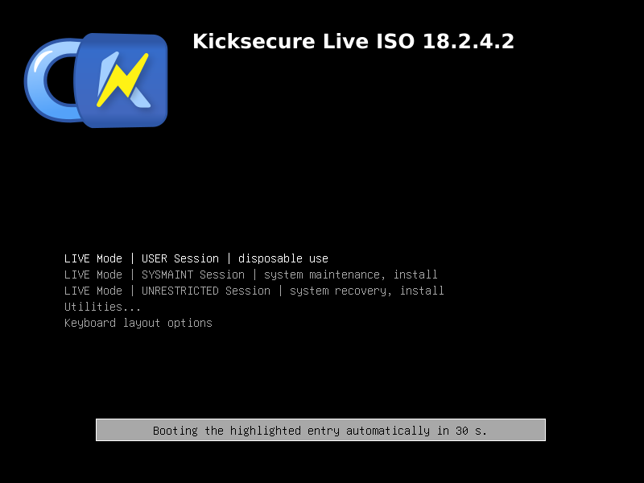
fail content: UNVALIDATED (no golden) live-grub-entry-selected (live / pre-install)
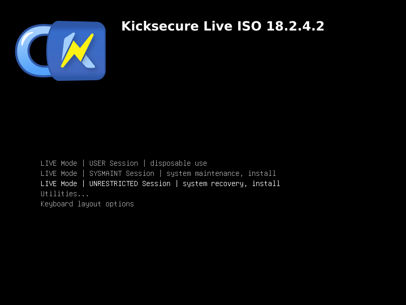
fail content: UNVALIDATED (no golden) live-kernel-boot (live / pre-install)

fail content: UNVALIDATED (no golden) live-desktop-ready (live / pre-install)
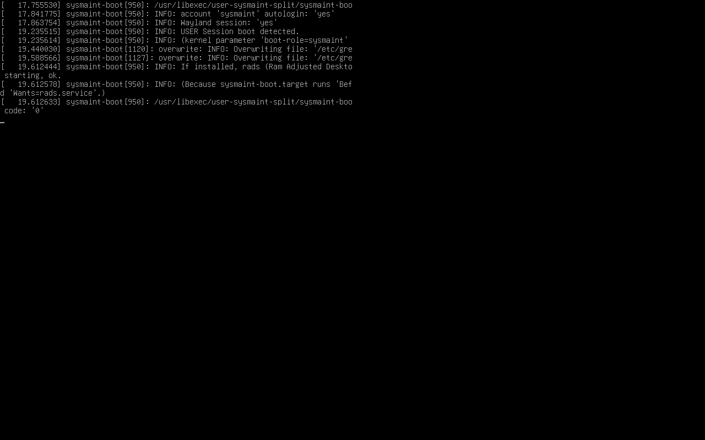
fail content: UNVALIDATED (no golden) live-guestcontrol-ready (live / pre-install)

fail content: UNVALIDATED (no golden) install-host-launched (live / pre-install)

fail content: UNVALIDATED (no golden) welcome (live / pre-install)
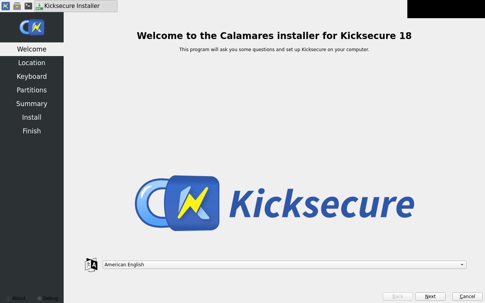
fail content: UNVALIDATED (no golden) location

fail content: UNVALIDATED (no golden) keyboard
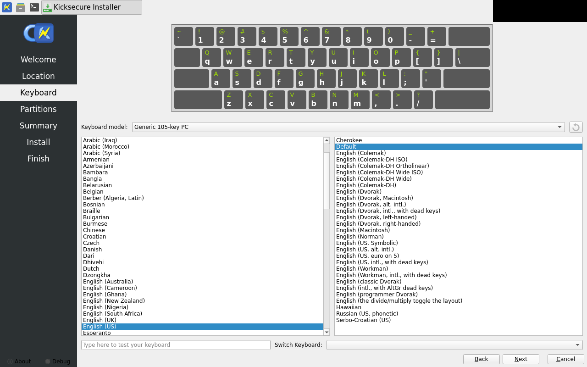
fail content: UNVALIDATED (no golden) partitions (live / pre-install)

fail content: UNVALIDATED (no golden) partitions-luks-filled (live / pre-install)

fail content: UNVALIDATED (no golden) summary

fail content: UNVALIDATED (no golden) install-started (live / pre-install)
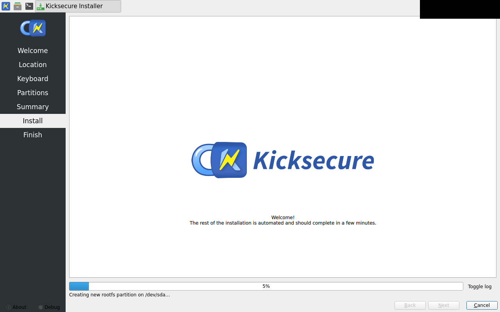
fail content: UNVALIDATED (no golden) install-done (live / pre-install)

fail content: UNVALIDATED (no golden) vm-stopped-iso-detached
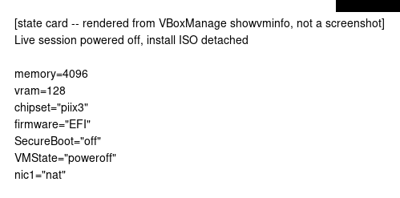
fail content: UNVALIDATED (no golden) installed-firmware-logo (installed system / first boot)
fail content: UNVALIDATED (no golden) installed-grub-menu (installed system / first boot)
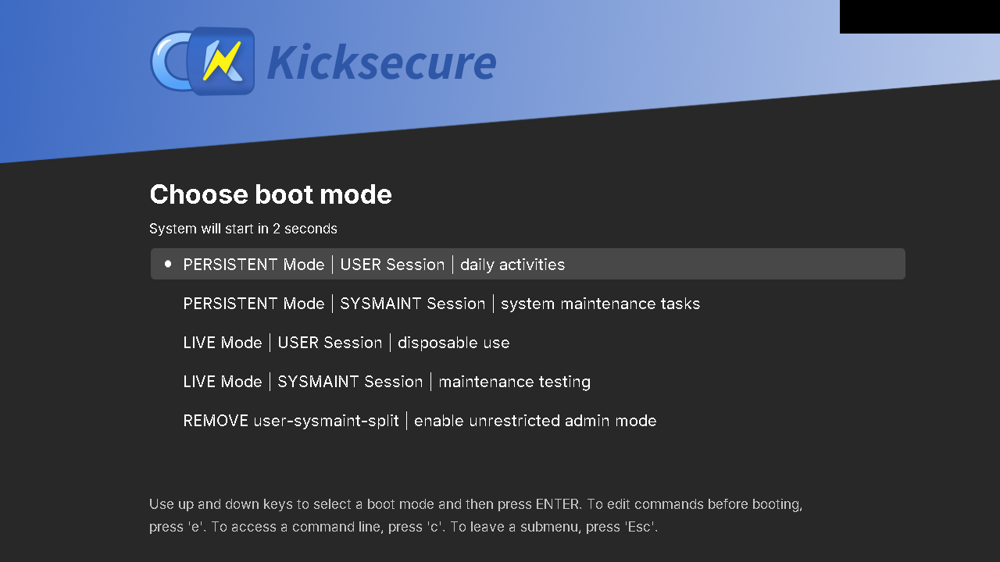
fail content: UNVALIDATED (no golden) luks-prompt (boot / LUKS unlock)
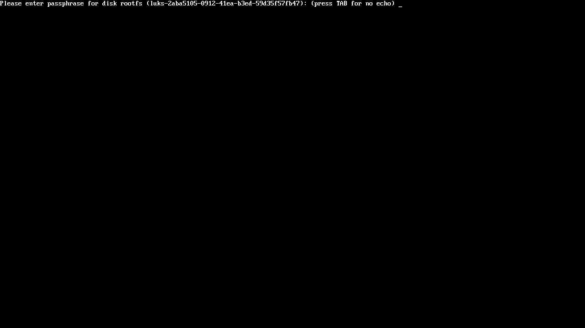
fail content: UNVALIDATED (no golden) luks-passphrase-typed (boot / LUKS unlock)
fail content: UNVALIDATED (no golden) luks-unlocked (boot / LUKS unlock)
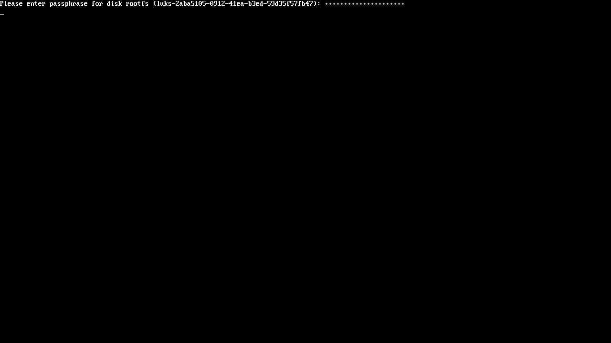
fail content: UNVALIDATED (no golden) first-boot (installed system / first boot)

fail content: UNVALIDATED (no golden) terminal-open
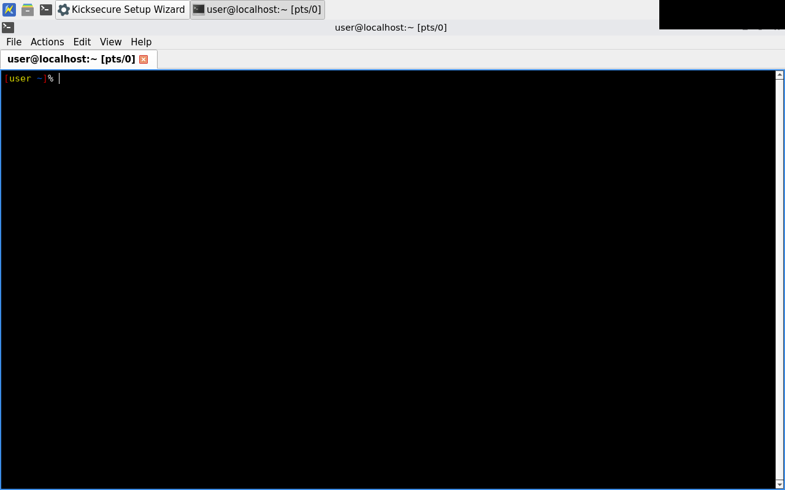
fail content: UNVALIDATED (no golden) check-6-gui-rendered (post-boot checks)
fail content: UNVALIDATED (no golden) vt-switched (post-boot checks)
fail content: UNVALIDATED (no golden) vt-logged-in (post-boot checks)
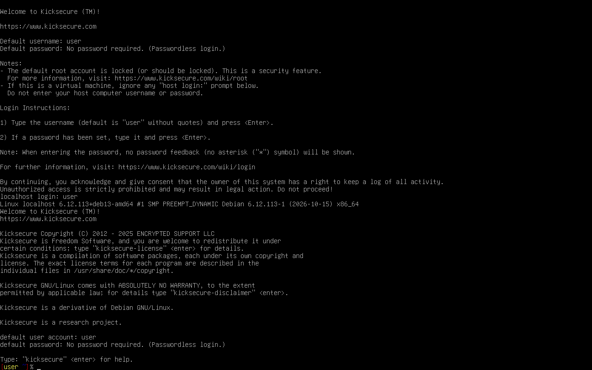
fail content: UNVALIDATED (no golden) vt-logged-out (post-boot checks)
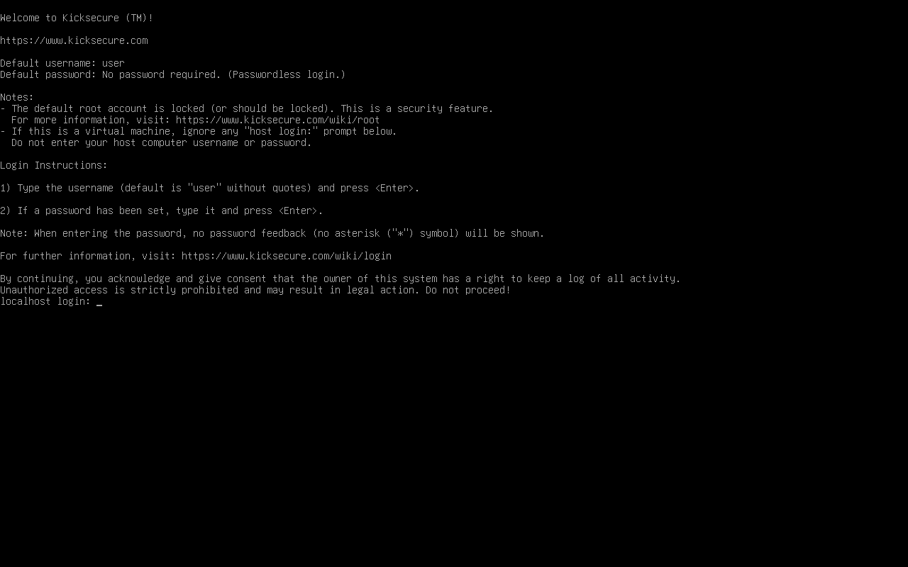
fail content: UNVALIDATED (no golden) vt-graphical-restored (post-boot checks)
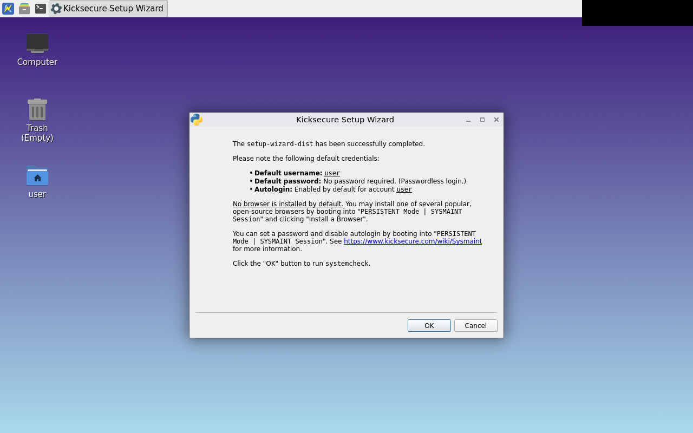
fail content: UNVALIDATED (no golden) failure-vm-state
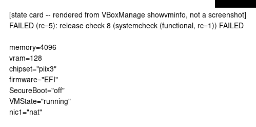
fail content: UNVALIDATED (no golden) failure
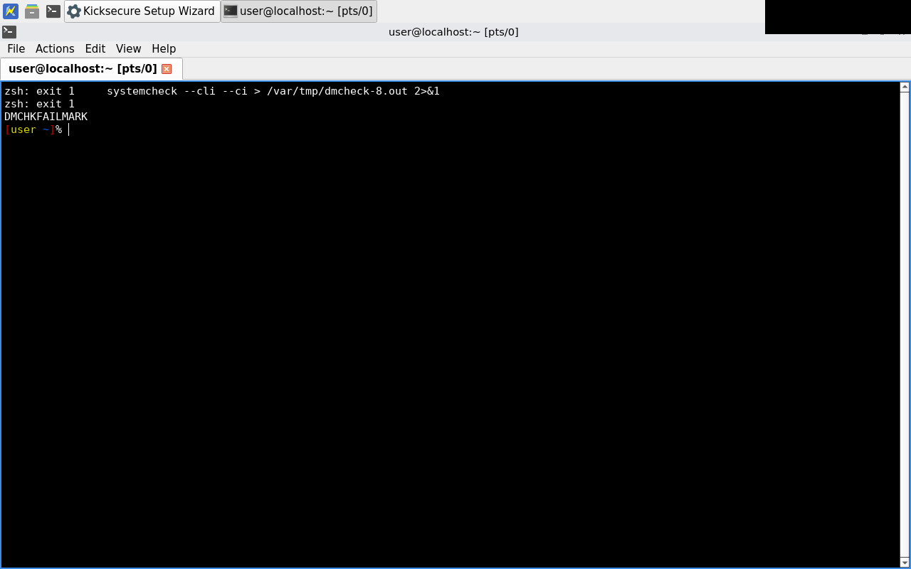